Orthographic drawing
In this chapter, you will learn how to make drawings that show the exact sizes of parts of objects. The drawing will also show what objects look like from different viewpoints.
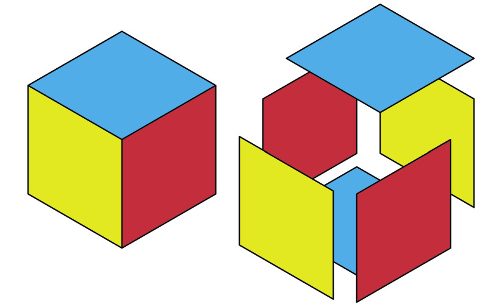
Figure 1
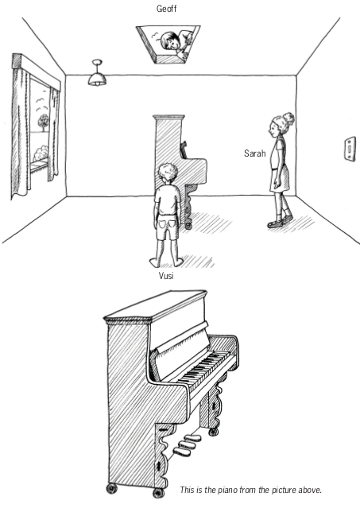
Figure 2
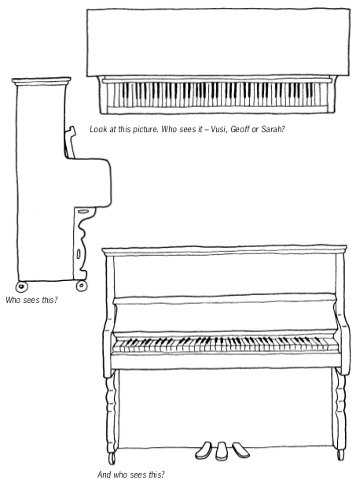
Figure 3
About orthographic drawing
In Grades 7 and 8, you learnt different ways of drawing your designs. You can quickly put your ideas on paper with sketches. Adding perspective makes drawings look more realistic. Adding shading and colour make your drawings look even better.
The word orthographic comes from two words. "Ortho" means looking straight at a flat face of an object. "Graphic" means a drawing.
Figure 4
Figure 5
Figure 6
You will now learn how to make orthographic drawings. This means you will look at an object from different sides and make separate drawings of what you see.
Look at this isometric drawing of a rectangular box. Only three faces of the box are visible.
-
How many faces of the box are not shown on this drawing?
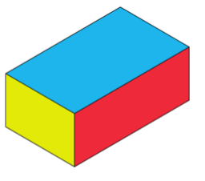Figure 7
If you look straight down from above at the box, you will see only a blue rectangle.
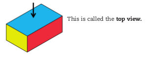Figure 8
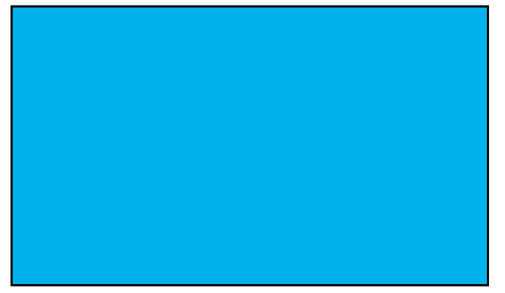Figure 9
If you look at the box from a certain position on the left, you will see a yellow rectangle.
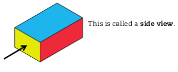Figure 10
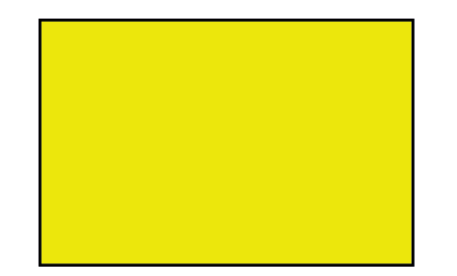Figure 11
If you look at the box from a certain position on the right, you will see a red rectangle.
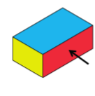Figure 12
Figure 13
This is also called a side view.
It can also be called the front view.
The front view, top view and one side view of a small house are shown below. A set of drawings like this is called first-angle orthographic projection.
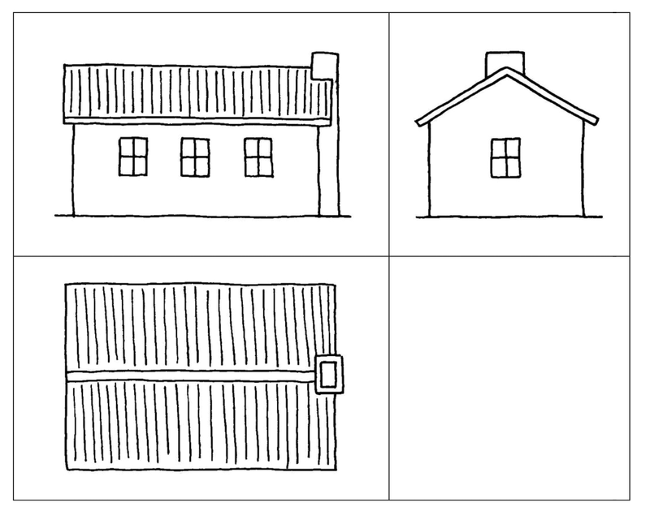
Figure 14
First angle orthographic projections are normally drawn in blocks as shown here. The front view is drawn first, in the upper left block. Construction lines are then drawn from the front view to make it easier to draw the top view and a side view. A side view can also be called an end view.
Front view
Side view
Top view
Make your first orthographic drawings
An isometric drawing of a mobile staircase is shown on the right. The staircase is 900 mm wide. The other dimensions are shown on the side view on the next page.
A front view of the staircase is shown in the upper left block below. Use construction lines to draw a top view and side view in the lower left and upper right blocks.
Figure 15
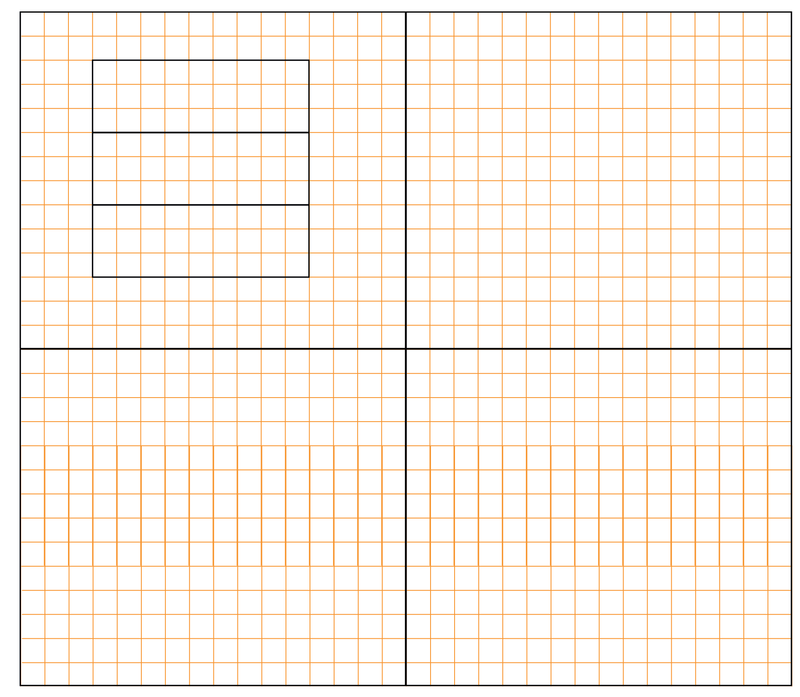
Figure 16
Architects use orthographic drawings of houses to tell the builder the size of the windows, how tall the walls are and how high the roof is. These are called dimensions or measurements. We usually write measurements in millimetres (mm).
The small lines on your ruler are 1 mm apart.
Look at this side view of the staircase. You can see the measurements between the arrows.
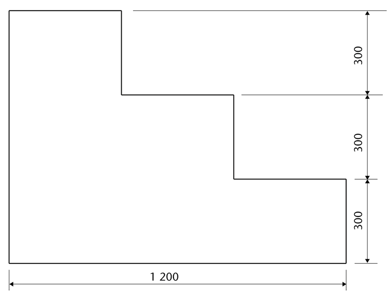
Figure 17 : Side view of the staircase with measurements
Have a look at the drawings below and on the next page. An architect made these while he designed a house.
Figure 18: Preliminary drawings
Figure 19: Final drawings
Different kinds of lines in drawings
Different kinds of lines are used in the following drawing:
Figure 20
The following types of lines are used in the above drawing:
Make a free-hand copy of this drawing on the next page, in which you use the same types of lines.
Next week
In the next chapter you will further develop your drawing skills. You will have to make various drawings of a staircase and wheelchair ramp.